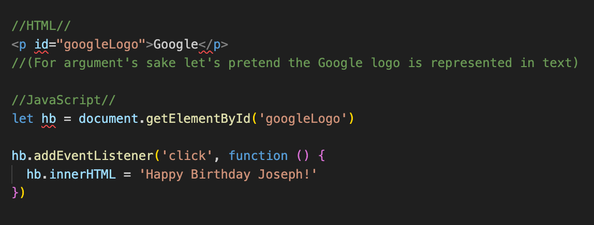

If Frodo and his hobbit bros could only destroy the Ring through snazzy web development, then they will need some help from some very special fellows. HTML is the Aragorn of the group - he is the badass leader and rock that keeps everyone in line. CSS is obviously Legolas, who is mostly there just to provide flair and eye candy. JavaScript is the bro Gandalf, the buzzy spiritual guide, sometimes he's there, sometimes he's not, but knows the most things and has the most insight into the greater will of the internet (also, if you were wondering, Gollum is cookies, Gimli is pop up ads/messages and Sauron is probably Mark Zuckerburg, idk).
It's the order that the code runs - top to bottom, line by line - however, conditions and loops can be used to disrupt the flow and increase user interactivity/control. In HTML and CSS, what is displayed on the webpage will be dictated by the code and won't change unless the user interacts with Developer Tools, but with JavaScript, the flow of the code will depend on what the user does.
Loops are what happens when code needs to go through a list of data and grab what it needs before moving on.
The DOM is the code of a webpage, represented in such a way that makes it interactive i.e. changeable by editing or adding more code. The DOM, despite it's name, has no personality, likes whatever you like and will do whatever it tells you to do. For example: say it's your birthday but no one remembered. Aw. Sad for you. But who needs friends because you know JavaScript and you can manipulate the DOM in your browser to say "Happy Birthday Joseph" instead of the Google logo.
Data can be stored within variables (whatever codeword you want to use) used to represent it, which makes it easy for the code to refer back to it later. Two types of this kind of data storage are "arrays", which is an ordered list of things, and "objects", which is an unordered list of pairs of things. Because arrays and objects are structured differently, accessing the data within them needs to happen in a particular way.
With arrays, the request to access data needs to specify which number in the list the thing is that you want to grab (this counts up from zero, not one, because reasons).
With objects, you just need to specify the name of the thing (or pair of things).
Functions are little Meeseeks in your code which just want to help you with whatever your problem is and then effectively cease to exist until called upon again. You can create functions to do just about anything, and call on those same functions as much as you need to.